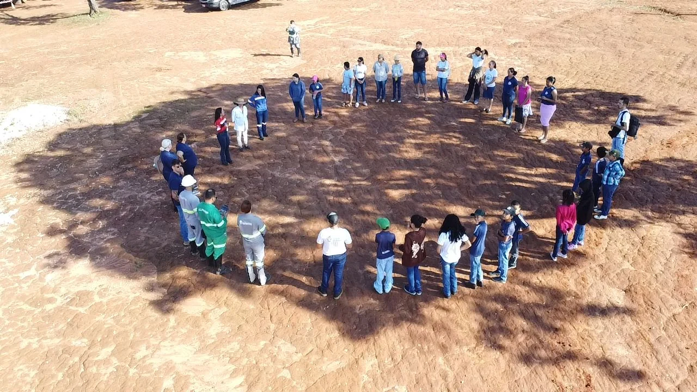

Engenharia agronômica com experiência de campo, recuperação ambiental e geotecnologia.
A Ordone Agroambiental estrutura demandas técnicas a partir de diagnóstico, dados e acompanhamento.
Ricardo Lourenço Ordone Enes — Engenheiro Agrônomo
Engenheiro Agrônomo com mais de 11 anos de atuação em engenharia ambiental, recuperação de áreas degradadas, PRAD/PRADA, solos, vegetação, geoprocessamento e gestão de projetos, com experiência em projetos relacionados à mineração, agricultura e consultoria ambiental.
Diretor Técnico e Responsável Técnico — Ordone Agroambiental.
CREA 18776/D-DF

Responsabilidade técnica e dados institucionais.
Diretor Técnico
Ricardo Lourenço Ordone Enes
Engenheiro Agrônomo
CREA 18776/D-DF
Ordone Agroambiental
CNPJ 23.033.419/0001-45
Rua Bernardo Caparucho Melo Franco, 577, sala 03
Bela Vista I · Paracatu/MG · CEP 38.600-508
Contato profissional
Campo + dados + tecnologia.
Diagnóstico
Problema, objetivo, área e contexto.
Evidências
Documentos, mapas, fotos, laudos e campo.
Engenharia
Escopo, metodologia e responsabilidade técnica.
Acompanhamento
Registro, monitoramento e ajuste.